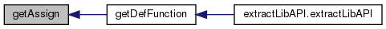
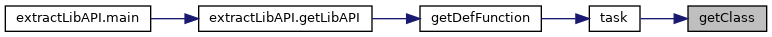
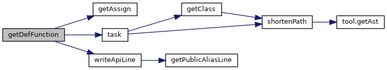
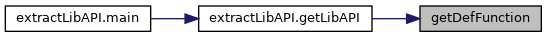
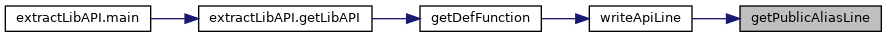
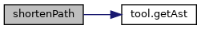
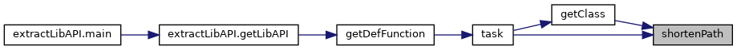
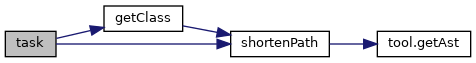
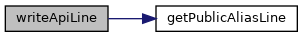
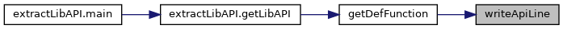

|
PCART
|
Extract API definitions from lib source code. More...
Classes | |
| class | RegexMatch |
| Regular expression match class 正则表达式匹配类 More... | |
Functions | |
| def | getAssign (root_node) |
| Extract all assign node from a .py file's AST 通过AST获取.py文件的Assign语句 More... | |
| def | getClass (lst, root, prefix, fileDict, pyiFlag=0, importCache=None) |
| Extract class method definitions from a give class. More... | |
| def | getDefFunction (args) |
| Extract all lib API definitions from a specified version 抽取给定版本的库API定义 More... | |
| def | getPublicAliasLine (line, sourceRoot, publicRoot) |
| Return a public alias line for source-root API lines 为源码根路径API行生成公开路径别名 More... | |
| def | shortenPath (lst, fileDict, importCache=None) |
| Shorten the API path based on init.py and import alias 通过解析__init__.py和import别名,把源码中的部分API路径缩短 More... | |
| def | task (codeText, libApi, prefix, fileDict, pyiFlag=0, importCache=None) |
| Extract all lib API definitions from a source file 抽取库源码API定义任务 More... | |
| def | writeApiLine (fw, line, sourceRoot='', publicRoot='') |
| Write one lib API line and its public alias if needed 写出一行库API，并按需写出公开路径别名 More... | |
Extract API definitions from lib source code.
Extracts API definitions from library source files by parsing AST for class definitions, function definitions, and init.py assignment aliases. Handles .py/.pyi deduplication and API path shortening via init.py imports. 通过解析AST提取库源码中的类定义、函数定义和__init__.py赋值别名。处理.py/.pyi 去重，通过__init__.py导入缩短API路径。
| def getDef.getAssign | ( | root_node | ) |
Extract all assign node from a .py file's AST 通过AST获取.py文件的Assign语句
| root_node | The ast node of the .py file |
Definition at line 68 of file getDef.py.

| def getDef.getClass | ( | lst, | |
| root, | |||
| prefix, | |||
| fileDict, | |||
pyiFlag = 0, |
|||
importCache = None |
|||
| ) |
Extract class method definitions from a give class.
抽取类中方法定义。递归访问类中所有节点，主要解决嵌套类的问题
| lst | List of lib API definitions extracted from a lib source file |
| root | The class type ast node |
| prefix | The fully qualified name of a source file. For example, the prefix for lib/a/b/c.py is lib.a.b.c. |
| fileDict | A file with a dictionary format {absolute path of the file: relative path of the file}. The relative path begins with the lib name, separated by "/", e.g., lib/a/b/c.py |
| pyiFlag | A flag denotes whether the Python source file is .pyi file. |
| importCache | Cache of init.py import mappings used to shorten API paths. |
Definition at line 165 of file getDef.py.

| def getDef.getDefFunction | ( | args | ) |
Extract all lib API definitions from a specified version 抽取给定版本的库API定义
| args | The arguments include the lib name, lib version, and the lib path |
Definition at line 319 of file getDef.py.


| def getDef.getPublicAliasLine | ( | line, | |
| sourceRoot, | |||
| publicRoot | |||
| ) |
Return a public alias line for source-root API lines 为源码根路径API行生成公开路径别名
| line | A lib API output line |
| sourceRoot | The source package root name, e.g., tensorflow_core |
| publicRoot | The public package root name, e.g., tensorflow |
Definition at line 285 of file getDef.py.

| def getDef.shortenPath | ( | lst, | |
| fileDict, | |||
importCache = None |
|||
| ) |
Shorten the API path based on init.py and import alias 通过解析__init__.py和import别名,把源码中的部分API路径缩短
缩短API路径可能会将不同文件中的API还原成相同的形式，比如A.b.f,A.c.f都还原成A.f
| lst | An API path. Initially, lst is the fully qualified API name. |
| fileDict | A file with a dictionary format {absolute path of the file: relative path of the file}. The relative path begins with the lib name, separated by "/", e.g., lib/a/b/c.py |
| importCache | Cache of init.py import mappings, keyed by (init path, current level). |
Definition at line 104 of file getDef.py.


| def getDef.task | ( | codeText, | |
| libApi, | |||
| prefix, | |||
| fileDict, | |||
pyiFlag = 0, |
|||
importCache = None |
|||
| ) |
Extract all lib API definitions from a source file 抽取库源码API定义任务
| codeText | The code text of a source file, read by f.read() |
| libApi | List of lib API definitions extracted from a lib source file |
| prefix | The fully qualified name of a source file. For example, the prefix for lib/a/b/c.py is lib.a.b.c. |
| fileDict | A file with a dictionary format {absolute path of the file: relative path of the file}. The relative path begins with the lib name, separated by "/", e.g., lib/a/b/c.py |
| pyiFlag | A flag denotes whether the Python source file is .pyi file. |
| importCache | Cache of init.py import mappings used to shorten API paths. |
Definition at line 246 of file getDef.py.

| def getDef.writeApiLine | ( | fw, | |
| line, | |||
sourceRoot = '', |
|||
publicRoot = '' |
|||
| ) |
Write one lib API line and its public alias if needed 写出一行库API，并按需写出公开路径别名
| fw | Output file object |
| line | A lib API output line |
| sourceRoot | The source package root name |
| publicRoot | The public package root name |
Definition at line 307 of file getDef.py.

